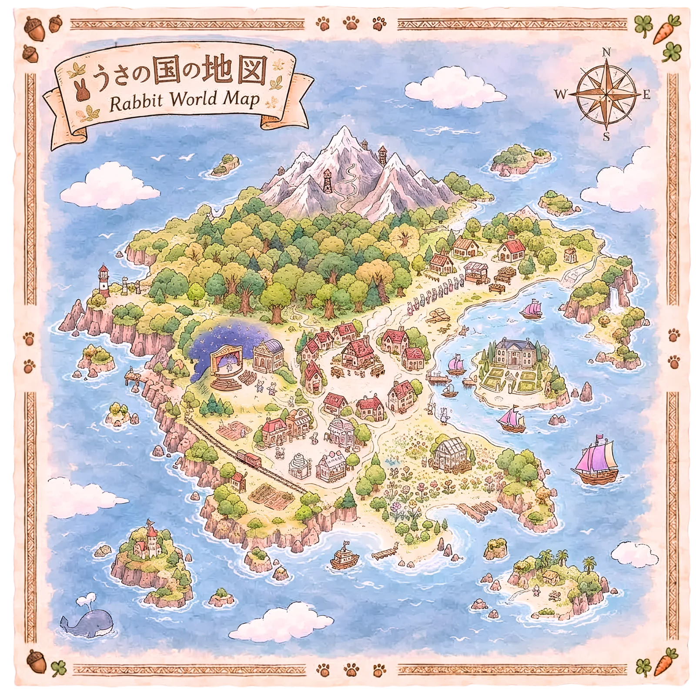

うさの国マップRabbit World Map
丸いアイコンをタップすると、そのうさがどこにいるかと紹介ページへのリンクが出ます。Tap a round icon to see who is there and a link to their profile.

丸いアイコンをタップすると、そのうさがどこにいるかと紹介ページへのリンクが出ます。Tap a round icon to see who is there and a link to their profile.
